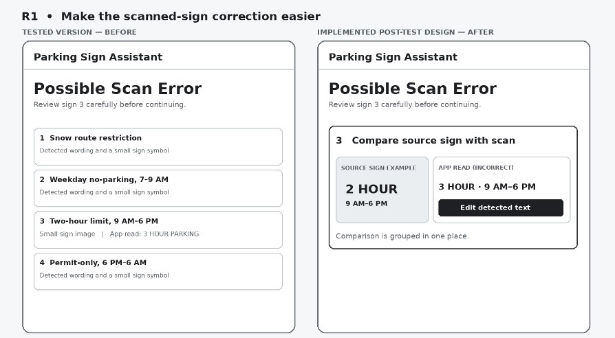
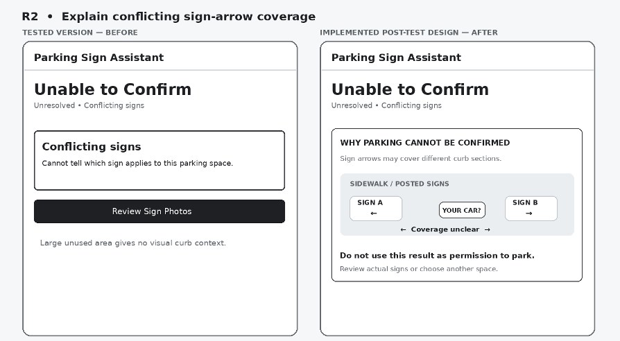
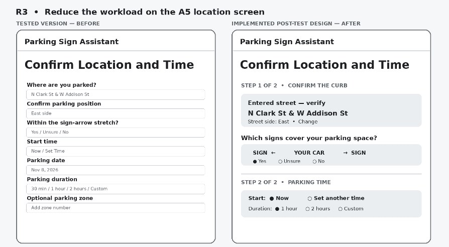
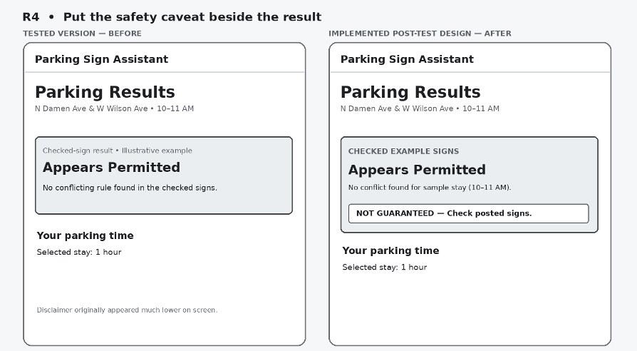
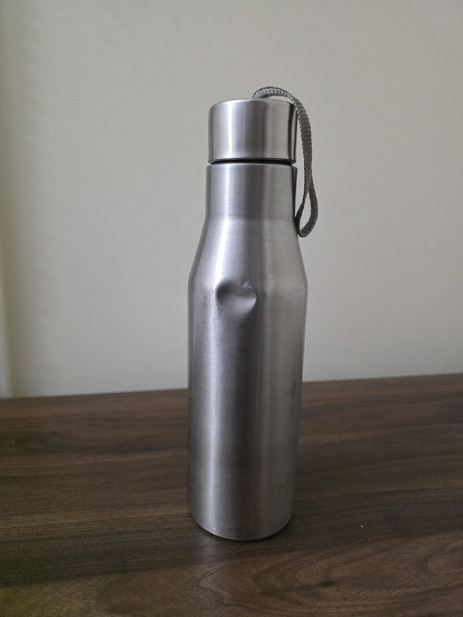
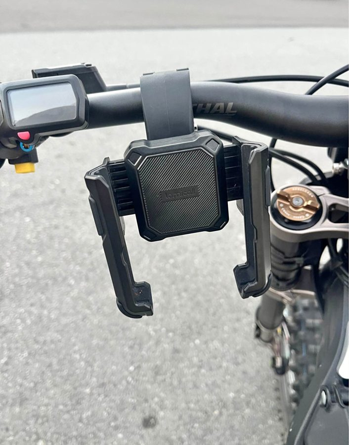
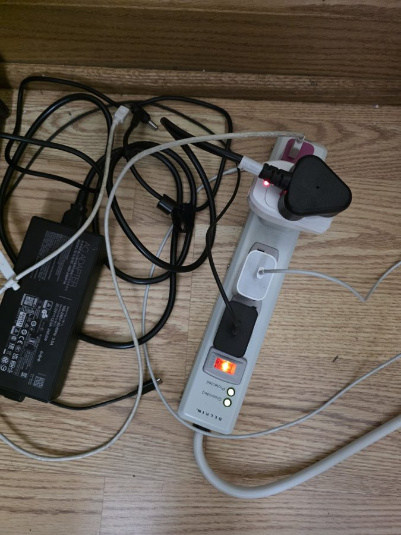

MS Computer Science student at DePaul University. I came into HCI 440 knowing nothing about UX and left genuinely interested in UX research: watching how people actually use things, then designing around what I see. I'm still exploring where my career goes, possibly game development, but I plan to bring this way of working wherever I end up.
Chicago area, ILEmail: dpate388@depaul.edu
No parking · 7–9 AM
Parking Sign Assistant
Helping Chicago drivers understand stacked parking signs, and admitting it when the app can't be sure.
My role
Concept lead for sign scanning, usability test facilitator, presenter
The parking space is right there. The hard part is the signs. One pole can carry three or four rules, arrows decide which part of the curb a sign covers, and a stay that is legal at 10 AM can be illegal an hour later. Drivers don't need help finding a space here; they need help answering one question: can I park on this curb, at this time?
What I did
Proposed the Parking Sign Scanner concept: photograph the sign stack, and the app turns short sign text into plain full sentences. It became the first step of our final flow.
Facilitated our first usability session and observed two others.
Presented the conceptual design, interaction design and result-state sections of our final presentation.
Research
We interviewed 8 drivers and ran a sign-reading exercise with 2 of them. Three findings shaped everything after:
People read a stack, not a sign. They compare every sign on the pole before deciding.
Position changes meaning. Arrows and exact curb boundaries create the most doubt.
A confident wrong answer is worse than none. When coverage is unclear, a yes/no answer can lead to a ticket or a tow.
Limit: the sign exercise had only 2 people, so we treated it as direction, not proof.
Design decisions and why
Combine four concepts instead of picking a winner. Each teammate proposed a different idea: time and zone entry, my sign scanner, rule verification, and a visual timeline with reminders. We checked each against the research and joined the strongest parts into one flow: upload photos, review what was read, confirm curb and time, see the result.
Three honest result states instead of yes/no. "Appears Permitted," "Restricted," and "Unable to Confirm." This came straight from the finding that false certainty is the real risk.
Design the failure paths, not just the happy path. We built recovery screens for a blurry photo, a misread sign, denied GPS and conflicting arrows.
Usability testing
4 Chicago street-parking drivers, 5 realistic tasks, think-aloud, clickable Figma prototype. OCR, GPS and parking rules were simulated, so we tested whether people understood the interface, not whether it reads real signs correctly.
20/20tasks completed without hints
4errors on "fix a misread sign," the most of any task
3.75/5confidence in what results mean, our lowest rating
4.75/5understood when the app wasn't sure
Everyone finished, but finishing wasn't the same as finding it easy. The hesitation, wrong taps and doubts told the real story. One participant read "Appears Permitted" as a guarantee.
"If the app can't figure out the sign, I'm not going to guess."Participant 1, in the session I facilitated, while comparing two conflicting arrows
As facilitator, the hardest part was not helping. When someone struggles you want to step in, but helping one person in the moment costs the data that helps everyone else.
What changed after testing
Each change traces back to a specific finding. Tested version on the left of each pair, revised version on the right.

Misread sign: source sign and the app's reading now sit side by side (4 errors on this task).

Conflicting arrows: a simple curb diagram, suggested by Participant 1 (hardest task, 4/5 difficulty).

Location form: one long form split into two steps. "Too much, especially in cold weather."

Results: "Not guaranteed, check posted signs" moved right under the result.
What I'd do next
Retest the revised screens with real photos of Chicago signs whose correct rules are already known. The changes are in Figma but haven't been retested yet.
Redesign the blurry-photo screen, which is still only a recommendation.
Plan the whole project's phases up front, so the last round of testing has room in the schedule.
In the real world this would make the most sense as a feature inside an existing parking app, built on verified city rule data, with "Unable to Confirm" kept as a non-negotiable.
Floors 1–2 ↑ · Elevators →
Finding Your Way in a Public Library
A field observation of a large, multi-story public library in downtown Chicago.
My role
Solo researcher
Method
Participant and non-participant observation
Time in field
2 sessions, 145 minutes
Who
5 observed patrons (anonymous), staff, and me
The question
How do people get from what they want ("that book," "the 7th floor," "a restroom") to the right place in a big library? I didn't name the library, because the goal was to understand the experience, not to criticize one place.
How I did it
In the first session I used the library as a normal patron with real goals and wrote down every place I got stuck. In the second I watched five other patrons at the elevators, catalog computers and reading areas, without interviewing anyone or photographing people. I organized notes by actions, tools, interruptions and communication.
Key insights
A one-step trip is really three steps. The entrance escalators stop at the 2nd floor. To go higher you have to find a separate set of elevators, and nothing at the entrance says so.
Mistakes can't be undone. In the elevator lobby, another patron pressed Down when he wanted to go up. The call couldn't be cancelled, so the elevator went to the 6th floor first and we both waited far longer than we should have.
The right tool was there; people just didn't start with it. I knew a book's title but not its author, and the shelves are sorted by author. I wandered, asked staff, and searched on my phone. Later I watched another patron find his book in seconds on the catalog computer.
Rules show up too late. A gaming room's "teens only" rule and the restroom location were only visible once you were already there.
Design opportunity
The library works well for one-step tasks like returning a book. It gets hard when a task crosses floors or when you don't know where to start. The opportunity is guiding people from what they want to the right place: say at the entrance that the escalators stop at 2, point people to the catalog first, and post rules on the way to a room, not only at its door.
What I learned
I'd been to this library many times and still got stuck on simple things. Being familiar with a place isn't the same as understanding it. And my best observation, the elevator mix-up, happened by chance, which is why time in the field beats a fixed checklist.
Limits and next steps
Both sessions were on a weekend afternoon, and much of the first session is my own experience as a returning visitor. Next I'd observe busier weekday times and talk with first-time visitors and staff.
Check posted signs
Unobtrusive Design
A personal design theory built from eight everyday things: good design stays out of the way while it works, and speaks up when it matters.
My role
Solo: observation, analysis, theory
Inputs
4 physical + 4 digital items I use daily
Output
6 principles, 2 case studies
Grounded in
Norman, Nielsen, Rams, Universal Design
The pattern
I noticed design mostly when it failed: a water bottle cap that gives no sign it's sealed, so I re-tighten it every time; Google Maps ending a trip at the right address but the wrong entrance; a phone document editor that hides most features behind three dots. A bad design does the reverse of a good one: it stays quiet when I need information and demands attention when it should stay out of the way.
Six principles
Confirm the FinishSignal clearly when a task is done or correct.
Show the Next StepSequence information so people know what to do now.
Design for the Whole DayTest in real conditions, not the first five minutes.
Make It LastStay useful instead of needing replacement.
Design for the Hardest Hands and EyesStart from the user under the most strain.
Stay in the BackgroundSupport the activity without demanding attention.

No signal the cap is sealed.

Maps on my bike: voice guidance, phone in my line of sight.

Four chargers, every socket taken.
Two case studies
Works: Google Maps on my bike. I set the destination once, turn on voice guidance, and listen through my earbuds while the phone sits on the handlebar mount. When I glance down, only the turn arrow and the blue route stand out. It fails when the voice comes too late and I miss a turn, or when it says "arrived" at the wrong entrance.
Fails: my multi-device charging setup. Laptop, phone, headphones and a game controller each have their own charger. The cables tangle, look alike, and take every outlet. The root cause is that each charger was designed alone, never as part of a system. My fixes: one multi-port station, one shared connector, and color-coded cable ends.
What I'd do next
My accessibility principle was applied to people I hadn't actually observed. Next time I'd test it with someone who has limited grip or low vision instead of imagining their experience.
Verify before you park
How I Use AI in UX Work
AI drafts, I verify. Every claim about users has to trace back to a real participant or my own notes.
Where it went wrong. For my design theory project, I first used an AI tool to polish my list of everyday objects. It added details I had never actually experienced, so I threw that version out and rewrote everything from my own notes.
Where it helped. Summarizing course material, organizing notes, and turning my ideas into clear writing. Even a good idea can be hard to put into words.
Where I keep it out. Generating the ideas themselves. Ideas come from real experience and emotion, which AI can't replace.
I disclose AI use on everything I submit, listing what the tool did and what was my own work.